What is Google Play Services?
What is Google Play Services?
안드로이드 폰에서
- 어느 순간부터 안드로이드 폰에 설치되어있는 애플리케이션
- 지워도 다시 설치되는 지울 수 없는 녀석
- 실행할수도 없는 녀석(애플리케이션 목록에도 없다니..) 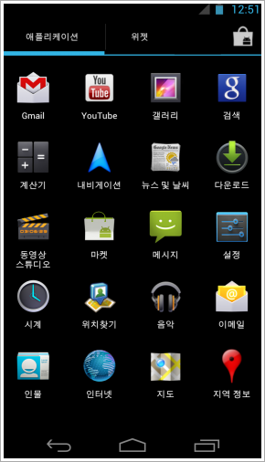
What is Google Play Services?
-
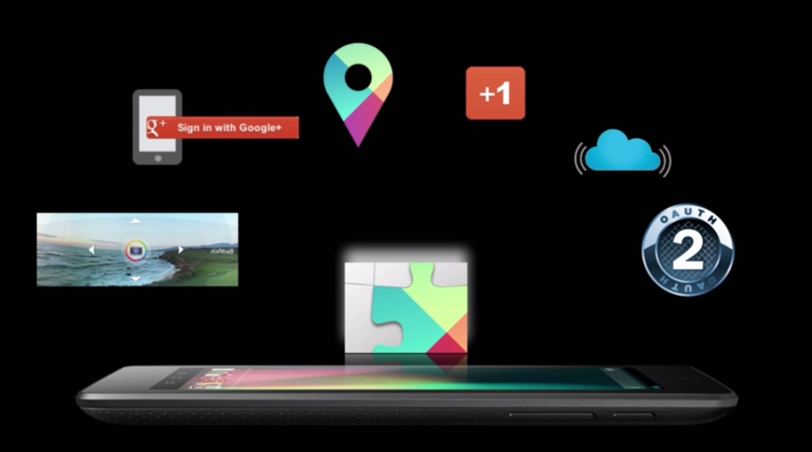
What is Google Play Services?
- 구글 플레이 서비스는 단일 라이브러리로, 모든 구글 서비스 API를 사용
- 안드로이드 디바이스 버전은 2.2이거나 그보다 높아야 한다.
- OS 버전이나, 통신사 배포 버전에 따른 디바이스 지원에 대한 걱정 없이 개발 가능!
- 15번째 Major release! 아마 대단히 효율적일걸?
- 구글 플레이 서비스는 싱글 라이브러리로 디바이스의 하나의 플레이스에서 모든 구글 서비스 API를 가져다 함께 사용할 수 있다.
- 안드로이드 디바이스 버전은 2.2이거나 그보다 높아야 한다.
- 이건 당신의 애플리케이션과 우리 애플리케이션을 디바이스 지원에 대한 걱정없이 개발할 수 있다는 걸 의미한다.
- 이번이 우리의 열다섯번째 구글 플레이 서비스 메이저 배포이고, 우리는 이 배포가 대단히 효율적일 것이라고 본다.
What is Google Play Services?
Google Play Services
- Google+, Google+ Sign-in, Maps & MapFragment v2, OAuth 2
OAuth, Authentication(인증)
- 구글 플레이 서비스 라이브러리를 통해
- 우리가 가진 모든 디바이스에서 구글 서비스에 액세스 하기 위한
- 단 하나의 authorization(권한부여) API를 제공함
- 유저는 지속적인 방법으로
- 구글 서비스를 위한
- OAuth Access token 을 받게됨
What is Google Play Services?
구글 플레이 서비스는 항상 최신이어야 한다!
- 최신! 구글 플레이 서비스의 핵심 ~.~
- 구글 플레이 서비스의 Bug fix, Update 를 할때~
- 안드로이드 프레임워크의 배포와 상관없이,
- 통신사의 배포 스케줄이랑 상관없이!
- 구글 플레이 스토어를 통해서 업데이트 됨!
- 자동으로 됨!
- 지워도 소용없음!
- 안드로이드 2.2 이상이면 다 됨!
What is Google Play Services?
Android 2.2 and above
왜 안드로이드 2.2, 또는 그 이상버전이어야 하지?
- 안드로이드 2.2 이상 버전, 현재 98.2%
- 플레이 스토어어는 2.2 부터 지원함
- 플레이 스토어를 hit 하는 유저 비율은 계속 상승~
- 프로요에는 Mass storage(SD Card)에 앱 설치 가능(정말로 편리한 API 추가됨)
- 플레이 서비스를 사용하는 대부분 앱 Mass storage 에 저장하고있고,
지금은 아니라도 아마 사용하게 될걸?
Android Support Library vs Google Play Services
왜 둘다 가지고 가는 걸까?
Google Play Services
- 구글 플레이 서비스는, 플레이 이코시스템을 서포트
- 우리가 API 를 사용할 수 있도록 해줌
Android Support Library
- 안드로이드 개발자와 안드로이드 이코시스템을 위한,
- 오픈 소스 라이브러리!
- 우리가 만드는 애플리케이션/소스코드에 포함
- 쓰고 싶은 모든 디바이스에서 쓰면 됨!
What's New
Location-based service
-
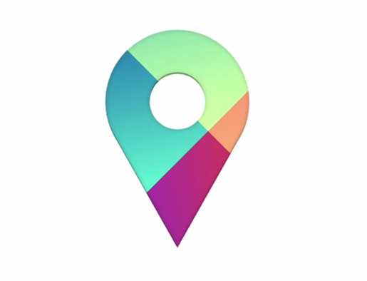
What's New
Location-based service
- Fused Location Provider
- Geofencing API
- Activity Recognition
What's New
Location-based service
- 기존의 MapFragment & Map v2 에 있는 것들뿐 아니라,
- 로케이션을 디텍트 하는 능력 향상!
- '짱짱맨'이 되었음!
- 우리 대신 힘든 일을 해줄 Fused Location Provider 가 있음!
What's New
Location-based service
지겹고 힘든일은 내가 대신한다(feat. 로케이션 팀)
- 정확한 위치를 찾기 위한 엄청 기~인 코드들이 필요
- 이런 지겨운건 화면 뒤로~
- 이런 힘든건 Fused Location Provider 뒤로~
- Provider 상태를 자동으로 디텍팅
- Provider는 특정시간(interval 등)에 Best result 를 나한테 던져줌
- Hard work는 전부 대신해줌
- 실제 사용하는 것도 나이스하고 쉬움
Location-based service
Connect to the Location Services Client
private void connectLBS() {
int gpsExists = GooglePlayServicesUtil.isGooglePlayServicesAvailable(this);
if (gpsExists == ConnectionResult.SUCCESS) {
mLocationClient = new LocationClient(this, this, this);
mLocationClient.connect();
}
}
@Override
private void onConnected(Bundle connectionHint) {
requestUpdates(mLocationClient);
}
Location-based service
Location Update Request
LocationRequest request = LocationRequest.create();
request.setInterval(minTime);
request.setPriority(lowPowerMoreImporantThanAccuracy?
LocationRequest.PRIORITY_BALANCED_POWER_ACCURACY :
LocationRequest.PRIORITY_HIGH_ACCURACY);
mLocationClient.requestLocationUpdates(request, new LocationListener() {
@Override
public void onLocationChanged(Location location) {
updateLocation(location);
}
});
Location-based service
Fused Location Provider
대신 다 일해주겠어
- 넌 나한테 interval 만 주면 돼
- minimum / maximum
- 우선순위도 말해줄래?
- 할 수 있는한 가장 정확한 결과를 원하는지,
- 아니면, 배터리를 가능한한 오래 지속시키기를 원하는지~
- 것도 아니면, 균형잡힌 방법을 찾아서 시도해 줄까?
Location-based service
Fused Location Provider
Fused Location Provider 의 장점
- 네가 뭘 선택했던 상관없지
- 항상 최소한의 배터리로
- 가장 정확한 결과를 얻으려고 시도하니까!
- 한가지 설정(Interval ?)만 했다면~
- 코드를 다시 컴파일 할 필요도 없고,
- 아무것도 하지 않아도,
- 유저들의 디바이스에 푸시 할 수 있으니까.
- 그리고 매 릴리즈 마다 계속해서 더 효율적이고,
더 정확한 결과를 만들어 내려고 시도할거니까~
Location-based service
Geofencing API
- 근접 경보 처럼 동작
- 모든 애플리케이션에서 모든 Geofence 를 추적
- 경계 안으로 들어오거나 밖으로 나갈때, 자동으로 트리거~
- Central Fused Location Provider 에서 처리해줌
- 각각의 Geofence 경계에서 얼마나 멀리떨어졌나에 기반해서,
- 우리가 사용해야할 provider 를 알아내는 방식
- GPS, Wi-fi, 3g/4g 상관없이, 모든 컨텍스트 정보를 취할 수 있는 장점~
Location-based service
Activity Recognition
Activity Recognition
Intent intent = new Intent(this, ActivityRecognitionService.class);
intent.setAction(MyActivity.ACTION_STRING);
PendingIntent pi = PendingIntent.getService(this, 0, intent,
PendingIntent.FLAG_UPDATE_CURRENT);
mActivityRecognitionClient.requestActivityUpdate(interval, pi);
Activity Recognition
@Override
protected void onHandleIntent(Intent intent) {
if (intent.getAction() == MyActivity.ACTION_STRING) {
ActivityRecognitionResult result = ActivityRecognitionResult.extractResult(intent);
DetectedActivity detectedActivity = result.getMostProbableActivity();
int activityType = detectedActivity.getType();
if (activityType == DetectedActivity.STILL) {
setUpdateSpeed(PAUSED);
} else if (ativityType == DetectedActivity.IN_VEHICLE) {
setUpdateSpeed(FATER);
} else {
setUpdateSpeed(REGULAR);
}
}
}
Activity Recognition
유저의 현재 활동에 따라 전혀 다른 UX를 제공할 수 있다.
- 계속 서있고, 움직이지 않으면 pause 상태 > 업데이트 disable
- 자전거를 탄다고 판단될때 > 업데이트 disable
- 차 안이라면 > 업데이트 faster
- 승객이라면 근처 맛있는 식당등을 찾으려고 할수도 있고,
- 스포츠 점수, 뉴스앱, 유저가 움직이지않고 서있다면 빠른 업데이트를 원할수도~
- 새로운 API, 좋은 기회! 생각을 머리속에서 꺼내자~
- 지금까지와는 완전히 다른 새로운 앱, 효율적인 앱을 만드는데 활용해보자~
What's New
Game Services
Game Services
Competition
- 모든것은 경쟁이 있을 때 더 나아진다. 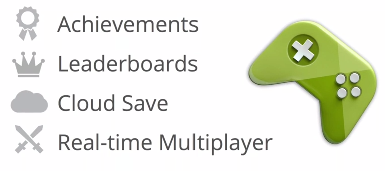
Game Services
Google developers console
- 새로운 기능들을 내가 다 관리해야 되는거야?
- 물론,
- 아니다.
Game Services
Google developers console
Game Services
Google developers console
Game Services
Google developers console
Game Services
Google developers console
Game Services
Achievement
- 실제 게임 내에서는 기본 형태(default look and feel)로 제공하고,
- 나타날때는 작은 다이얼로그로 나타나고, 전체 성과 화면을 볼수도 있다.
Game Services
Leaderboards
Game Services
Cloud save
- 4개의 128K 데이터 블럭을 사용할 수 있다.
- 덩치 큰 데이터들을 저장할 만큼은 제공되지 않는다.
- 자세한건 다른 세션을 참고...
Game Services
Game Services
Other sessions
- New Developments in Mobile Gaming
- Todd Kerpelman, Steve Martin, David Santoro
- An Introduction to Play games services
- Todd Kerpelman, Steve Martin, David Santoro
- Advanced Games Development Topics
- Tom Wilson, Bruno Oliveira
What's New
Google Cloud Messaging

Google Cloud Messaging
- 내 서버와 GCM 서버에 지속가능한 XMPP 커넥션을 만들 수 있다.
- 예전처럼 어떤 커넥션을 만들고 유지할 필요 없이도
- 디바이스에서 내 서버로 메시지를 보낼 수 있게 됐단 것!
- low latency / high reliability connection
- 나는 디바이스가 많아.
- 푸시가 왔네? 노티피케이션이 떠있어.
- swipe~ 해도 다른 디바이스엔 그대로네?
- 유저가 처리할 수 있다는 액션만 주면,
- 한번에 모든 디바이스에서 노티, 없어진다!
Activity Recognition
GoogleCloudMessaging gcm = GoogleCloudMessaging.get(context); gcm.send(to, msgId, data);
- 만약 원하는경우, 이걸 다른 디바이스에 전송할수도 있다.
Google Wallet
How to use Google Play Services
How to use Google Play Services
Android SDK Manager
-
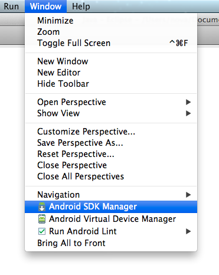
How to use Google Play Services
Extras > Google Play Services check! > Install
-
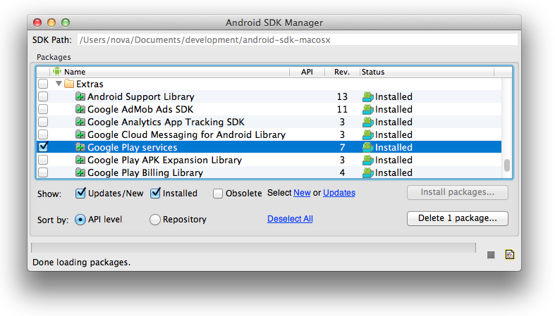
How to use Google Play Services
Google Play Services Library
-
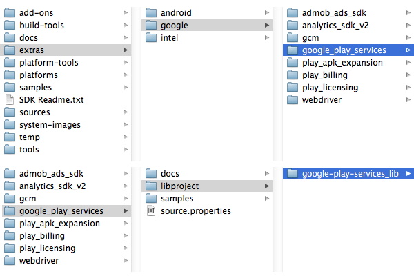
How to use Google Play Services
Import library project(google-play-services_lib)
-
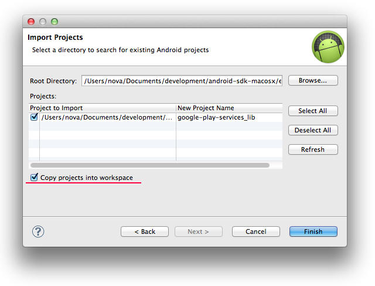
How to use Google Play Services
Reference library project
-
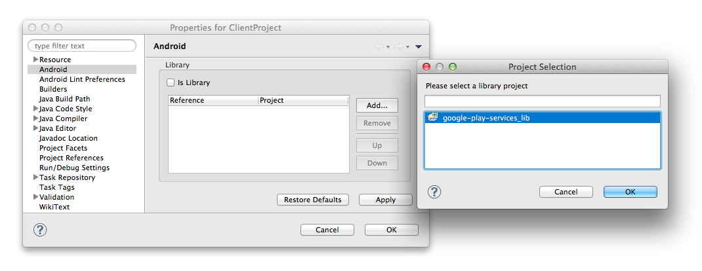
How to use Google Play Services
Google APIs Console
-
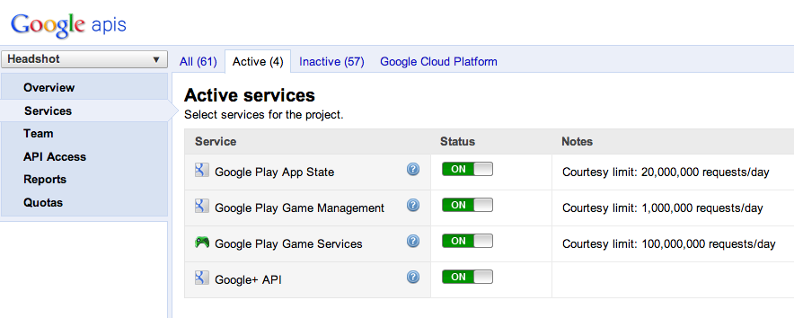
How to use Google Play Services
Google APIs Console
-
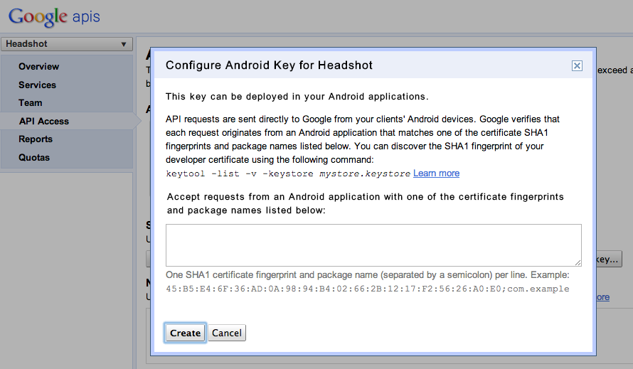
How to use Google Play Services
Google APIs Console
How to use Google Play Services
<application ...>
<meta-data
android:name="com.google.android.maps.v2.API_KEY"
android:value="your_api_key" />
</application>
Authentication vs Authorization
Authentication
- party(3rd party)를 안전하게 실별하는 것
- 내 폰에 있는 Google account 는 authenticattion.
Authorization
- 인증된 파티에서 서비스에 액세스하기 위한 것
- 구글 플레이 서비스를 이용할때는 authorization.
Authentication vs Authorization
Google Play Services
- authenticated account 을 위한,
- 표준화된 authorization 을 제공한다.
Authorization
Choose an Account
startActivityForResult(
AccountPicker.newChooseAccountIntent(null, null
new String[]{GoogleAuthUtil.GOOGLE_ACCOUNT_TYPE},
true, "Can haz token plz?",
null, null, null) REQUEST_PICK_ACCOUNT);
Google Play Services
Preflight Check
@Override
protected void onResume() {
super.onResume();
int canIPlay = GooglePlayServicesUtil.isGooglePlayServicesAvailable(this);
}
- Result Codes: - SUCCESS
- SERVICE_MISSING
- SERVICE_VERSION_UPDATE_REQUIRED
- SERVICE_DISABLED
- SERVICE_INVALID
Google Play Services
Obtain an Access Token
mToken = GoogleAuthUtil.getToken(this, "yhwoo.croute@gmail.com", "oauth2:" + Scopes.PLUS_PROFILE + " " + YouTubeScopes.YOUTUBE_READONLY);
Google Play Services
Access the data
Url url = new URL("https://googleapis.com/oauth2/v1/userinfo?access_token=" + token);
...
Google Play Services
Adding a +1 button
<com.google.android.gms.plus.PlusOneButton android:id="@+id/plus_button" android:layout_width="match_parent" android:layout_height="wrap_content" plus:annotation="inline" plus:size="standard" />
PlusOneButton button = (PlusOneButton) findViewById(R.id.plus_button); button.initialize(mPlusClient, "http://croute.me", null);
Google Play Services
References
Q & A
About Play Services Emulator
- Q: Play services 에뮬레이터에 X86 이미지를 쓰나, ARM 만 쓰나?
- A: 아직 런칭 안됐을텐데. 지금은 ARM 만 있어.
- Q: ARM 밖에 못봤나?
- A: ARM 밖에 못봤다, 개인적으로는. 너 잘 모르는거 같은데? Jeff?(옆에..) 없데.
- ...(얘기하다 확인한다고 나가심..)...
Q & A
WevView as Google Play Services
- Q: 다른 OS를 위한 구글 플레이 서비스 웹뷰 배포 계획이 있나?
- A: 좋은 질문!, 확실이 지금은 아무것도 한게 없어. 앞으로의 계획도 확실친 않고. 내가 알고 있는 것도 없어.
Q & A
Upgrade Google Play Service through Play Store
- Q: 하이! This is Awesome! 플레이 스토어를 통한 업그레이드 비율과 속도는 어느정도 되나? 유저가 항상 최신 버전을 얻을 수 있도록 해주는 계획이 있나?
- A: 디바이스에서 Google play services 가 업데이트 되는데 있어서, rate 와 frequency 에 대한 질문이네. 그건 매우, 매우, 매우 빨라. 보수적으로 말하면 1주 안에 다 배포/푸시 된다고 생각해. 새로운 Google play service 업데이트가 발생할 때 마다, 매우 신속하게 모든 디바이스에 푸시를 보내. 구글 플레이가 설치되어있던 시간만큼, 거의 즉시 해당 업데이트를 얻을 거야.
Q & A
Activity recognition, Location Services
- Q: ... 당신이 보여줬던 예제 중 하나를 보면, 자전거에 있으면 좀 더 빨리 업데이트 하고, 자전거를 안타면 좀 느리게 업데이트 하는게 있었잖아. Location Service 가 자동적으로 해주는 거니 아니면 우리가 수동적으로 해야되는 거니? 아님 내가 생각하지 못한 상황이 있는거야?
- A: Fused Location Provider는 네 활동(activity)에 기반해서 이런 속도를 수정할 수 있어. 얘 똑똑해.
Q & A
Game services
- Q: Game services 를 non game 에 사용한 적당한 예가 있나?
- A: 음... 있지.
- Q: 포스퀘어 같은 어떤 걸 생각하고 물어본거다.
- A: 클라우드 세이브 같은건 non game 에서도 매우 적합하다. 원한다면 업적을 사용할 수 있어.
- A: Service 사용에 있어 game category 로 제한할 필요는 없다고 생각하지만, 단지 game service 가 그렇게 특별하게 설계되어있을 뿐이야. 사용해 봤자... 별로일듯?
Q & A
Cloud save
- Q: Cloud save 에서 128K 짜리 4개 버킷이라는 한계를 말했다. 이런 제한을 넘어 갈 순 없나?
- A: Cloud save 에서는 안되는데, Google Drive API 를 쓰면 될것같다.
<Thank You!>
지... 질문 있으신가요?